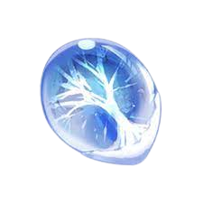
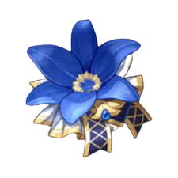
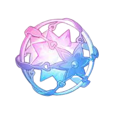

Genshin Impact es un RPG de acción a cargo de Hoyoverse para PC, PlayStation 4, PlayStation 5, Switch y dispositivos iOS y Android en el que debemos descubrir los secretos del mundo magico de Teyvat. Tu familiar y tu han viajado hasta Teyvat desde otro mundo. Separados al llegar y sin forma de salir, te decides a buscar respuestas de los Siete, los dioses de cada elemento. Junto a Paimon, una bondadosa espiritu guia, tu mision te llevara a través de hermosos bosques, ajetreadas ciudades y traicioneras mazmorras.

Es un tipo de resina que tiene multiples usos,
tambien es llamada resina condensada, y es producida a partir de la resina original; ademas sirven para farmear artefactos libros de experiencia y demas.
Para saber mas sobre esto click al icono.

Los artefactos en Genshin Impact son objetos magicos que puedes equipar en cada uno de tus personajes y que les otorgaran estadisticas adicionales.
Hay 5 espacios para artefactos, cada uno con características unicas.
Para saber mas sobre esto click al icono.

Los banners son los posibles deseos que se pueden pedir en el Gachapon, al principio cuando se desbloquea el gachapon,
te encontraras con tres banners, el inicial, el promocional y el banner permanente.
Para saber mas sobre esto click al icono.